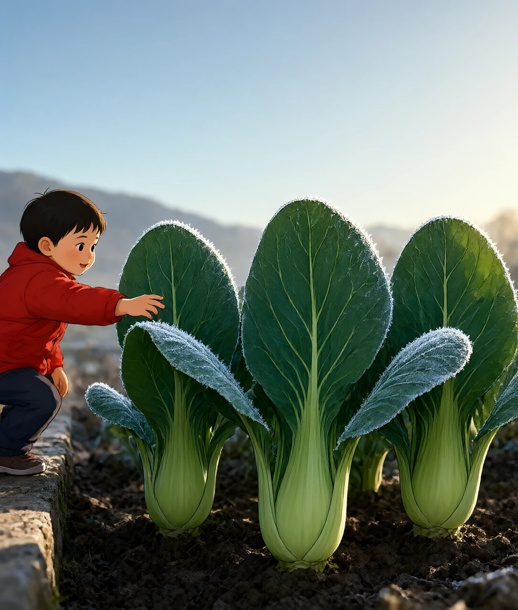

2024 年春节，霜打菠菜卖到断货。测定说它的糖翻了倍，总碳水却几乎没变

霜降在十月二十三日前后。这个节气一过，长江边的菜地会变个样。
清晨六点，露水在菜叶背面结成一层白。用手一抹，是凉的细粉，就像撒了层细盐。
地里的上海青，三天前还硬挺着。现在掐一下叶柄，脆，但带着点软。
老菜农管这叫霜打菜。他们知道该收了，再晚几天就要坏事。
「霜打的青菜分外甜」这句老话，古书里有影子。西晋的陆机写过，苦菜经霜之后「甜脆而美」。
但变甜的原因，跟多数人想的不一样。
糖并没有凭空变多。
一棵青菜长成之后，体内存下的总碳是固定的。变的是形状：原本不甜的淀粉，被拆成了甜的糖。
2024 年 2 月，春节前后。电商平台的霜打菠菜、霜打白萝卜卖到断货。央视网那篇报道里，天津农学院的王丽娟教授给的解释也是这样：淀粉水解成糖，总量没增。
这一篇讲清两件事：拆淀粉为什么能防冻；同样是青菜，夏天那批为什么反而苦。
先认识淀粉。它是一长串葡萄糖，串得很紧。不溶于水，也没有甜味。
葡萄糖就是糖最小的那个单位。把它串起来是淀粉，拆开来就是甜的。
干这活的是淀粉酶。酶就是一类专门给化学反应加速的蛋白质，好比一把剪刀。
温度一低，这把剪刀反而更忙。有测定显示，霜打之后淀粉酶的活性提高约 1.8 倍。
链被一段段剪开。先成麦芽糖，再成葡萄糖。
这时的青菜，内部换了一副样子。淀粉占总干重的比例，从约 20% 降到 8% 以下。可溶性糖则从 6% 升到 14% 左右。相当于存货里有三分之二换了形态。
同一批物质，只是换了个形态。
为什么要换？
因为淀粉不溶于水，糖溶于水。
细胞就是生物体最小的结构单位，里面装的是水。糖溶进去，水里的东西变多了。 这个变化叫浓度升高。浓度就是同样多的水里，溶了多少东西。浓度一高，冰点就往下走。
换算一下：水里每多溶 1 摩尔每千克的糖，冰点只降 1.86℃。一摩尔糖约 180 克，差不多一小碗。要让冰点降 5℃，得溶进去三小碗。
这是按理想溶液算的。真实细胞液里还有盐、氨基酸和蛋白，情况更复杂。但方向没错：溶得越多，越不容易结冰。
冬天给汽车加防冻液，是同一个思路。乙二醇溶进水里，冰点能压到零下三十几度。
青菜买不起乙二醇。它只能自己造糖。
还有第二笔账。
低温下，植物的呼吸也慢了。呼吸好比烧柴取暖，烧的就是糖。
白天光合作用造的糖，夜里本该烧掉一部分。天冷了，烧得少，剩下的就攒下来。
光合作用就是用光把水和二氧化碳拼成糖，这是植物所有的收入来源。
一边拆淀粉，一边少消耗。两个动作同一个方向，糖就厚了。
糖够多，水就不容易冻。可细胞里除了水，还有别的东西。
光靠糖，够吗？
要讲清楚这一章，得先看细胞长什么样。
植物细胞外面围着一圈细胞壁，硬的。里面是一层细胞膜，薄，像一层油。
水结冰，体积会涨。涨在细胞外面，和涨在细胞里面，后果完全不同。
先说外面。
温度往下走，冰先在细胞壁和细胞膜之间的缝隙里长出来。那里水多，又宽松。
冰一长，就把周围的水吸过去。细胞里的水被抽走，细胞开始瘪。
这看起来糟糕，其实还有救。细胞膜没破，等温度回来，水能重新吸回去。
再说里面。
温度跌得太狠，冰会直接在细胞内部结。这里的冰晶像小刀，四面都有棱。
细胞膜只有几纳米厚。纳米就是毫米的一百万分之一，几纳米大约是一根头发直径的万分之一。冰晶一顶，就破了。
破了就回不来。里面的东西漏出去，接触空气，氧化变黑。
这就是霜打和冻伤的分界。同一个降温，一个变甜，一个烂掉。
除了糖，植物还会备几样东西。
一样是脯氨酸。它是一种氨基酸，氨基酸就是拼蛋白质的积木。脯氨酸能把水分子抓住。它的效果，好比在一排整齐的砖里塞进几个歪的，冰就排不成格子。 实验室里的观测显示，把青菜放在零下几度处理几天，这套装备会一样样上线。
一样是可溶性蛋白。其中有一类叫脱水素，名字就是它的工作：在脱水的时候护住膜。
还有抗冻蛋白。它会贴在小的冰晶表面，让冰晶长不大。
膜本身也会改。低温下，膜里的不饱和脂肪酸比例升高。不饱和的意思是链上多几个拐弯，拐弯多了不容易冻硬。
这些装备不是霜降那天临时造的。它们要几天时间，一样一样攒出来。
所以「霜打」是个过程，不是一瞬间的事。
那么，为什么同一片地，夏天长出来的菜是苦的？
现在说苦。
我们常吃的青菜，多数属于十字花科：白菜、芥菜、油菜、萝卜、菜心。
这一科有一个共同的化学特征。它们体内有芥子油苷，这是一类含硫的次生代谢物。次生代谢物就是植物专门造出来、不用于生长的那些化学物质。
芥子油苷本身不苦。它和黑芥子酶分开放，一个在液泡里，一个在细胞质里。液泡是细胞里装水的大袋子，细胞质是袋子外面的空间。
细胞完整的时候，两者碰不到。
细胞一破，就碰上了。好比两个分开放的化学品，罐子一碎就混到一起。切开、咀嚼、或者被霜冻伤，都会破。
黑芥子酶一接手，芥子油苷就分解。产物里有异硫氰酸酯，苦，而且辣。
这是植物的防身术。虫子咬一口，辣得受不了，下次就不来了。
人尝到的苦，是这套武器的一个副产品。
温度在这里起什么作用？
低温下，芥子油苷的合成会放慢。有测定给出这样一组数：霜打前，青菜的总芥子油苷在 1.2 到 1.6 微摩尔每克。霜打后，降到 0.4 到 0.6。
少了差不多六成。
糖在涨，苦味物质在落。两个方向一起走，甜就显得更突出。
那夏天呢？
夏天是反方向。气温高，硫苷合成活跃。有报道说，日均温超过 25℃ 之后，油菜的总芥子油苷能提高三成以上。
还有第二笔账，跟糖有关。
夏天青菜长得快。从种到收，25 到 30 天就够，差不多一个月。
秋冬要慢得多，得 60 到 90 天，是夏天的两三倍。
长得快，糖就攒不够。同样的苦味物质，糖少的时候更显苦。
这不是味觉的错觉，是浓度比的问题。
第三笔账是抽薹。
天一热，青菜会从长叶子转向开花。茎往上窜，这叫抽薹。
抽薹之后，叶片开始老化。纤维素和木质素增多，这两样是植物的骨架材料，嚼起来发柴。
所以夏天那盘青菜的苦，是三件事叠在一起：硫苷多、糖少、叶子老。
这里要说一句不确定的。
2025 年，《浙江农业学报》登了一篇研究。作者拿 20 份叶用芥菜，比较夏天和秋冬两季。
结果有点出乎意料。夏季芥菜的芥子油苷、可溶性糖、抗坏血酸，都显著高于秋冬季。
更意外的是后面一句：大多数夏季芥菜确实有苦味，可苦味跟芥子油苷这些指标对不上号。
也就是说，苦不只来自芥子油苷。还有别的物质在起作用，具体是哪几种，学界还在找，尚未确定。
科学里常有这种事。一个解释听起来很顺，数据一细看，还有一半没说清。
那低温到底改了什么？把菜塞进冰箱行不行？
甜这件事，只在特定条件下成立。
第一条边界：不是所有菜都扛得住。
能霜打的是抗寒蔬菜。白菜、菠菜、芥菜、萝卜、菜心、上海青，这一类。
喜温蔬菜不行。番茄、茄子、黄瓜、辣椒、豆角，原产热带亚热带，没有拆淀粉抗冻这套本事。
一遇霜冻，它们的细胞膜会发生相变，里面的东西渗漏出来。表现是水渍状、褐变、发蔫。
第二条边界：温度过了就是冻伤。
轻霜在零下 2 到 5℃ 之间，菜还能扛。再低，或者冻的时间太长，细胞里的冰晶大面积长起来，膜被成片刺破。
这时的菜叶会软烂、发黑，还有不正常的苦味。已经不是好不好吃的问题，是不能吃了。
所以霜打菜贵，贵在窗口短。菜农得在转化完成、冻伤之前的那几天收完。
第三条边界：冰箱做不出霜打菜。
家用冰箱能降温，但给不了三样东西。
一是活体代谢。采收后的菜，光合停了，造不出新糖，只能消耗。
二是昼夜温差。霜打的关键是白天造、夜里省。冰箱里恒温，这个循环断了。
三是结霜的条件。霜要在地面附近形成，得有水汽，还得让地面的热散得快。冰箱的冷是另一套机制。
代价也说一句。霜打菜的细胞已经受过一次伤，不耐放。买回来最好几天内吃完，别囤。
还没解决的问题，有两个。
一个是苦味的确切来源。前面那篇研究已经说明，芥子油苷解释不了一切。剩下的部分是什么，还在找。
另一个是最佳采收期。霜打几天最甜？不同品种、不同地区，答案不一样。目前主要靠经验，误差可能有一两天。
想往下走，可以看两个方向。
一个是冻梨。东北的秋天摘下来，又硬又涩。冻过再化，变软变甜。用的也是这套办法，只是对象换成了水果。
另一个是热带水果为什么怕冰箱。比如香蕉、芒果，放进去几天就发黑。原因和番茄被霜打一样：它们是喜温的，低温对它们不是锻炼，是伤害。
同一套物理，两个方向。
霜打菜吃起来更甜，主要原因是什么？
B 解析：总碳是固定的。变的是形态，淀粉水解成葡萄糖、蔗糖和果糖，能溶于水，舌头就尝到甜。
糖溶进细胞液之后，为什么能让菜抗冻？
C 解析：水里每多溶 1 摩尔每千克的糖，冰点大约降 1.86℃。溶质越多，越不容易结冰，汽车防冻液是同一个道理。
霜打和冻伤的分界，落在哪件事上？
D 解析：冰在外面长，细胞脱水但膜完好，回暖能恢复。冰在细胞内部长，会刺破只有几纳米厚的膜，不可逆。
夏天青菜苦味重，下面哪条不是主要原因？
A 解析：夏天长得快，糖攒得少，不是更多。糖少时同样的苦味物质更显苦，这是浓度比的问题。
把青菜放进家用冰箱，为什么做不出霜打菜？
B 解析：霜打靠的是白天造糖、夜里少消耗这个循环。采收后光合停了，冰箱里又是恒温，两个条件都缺。